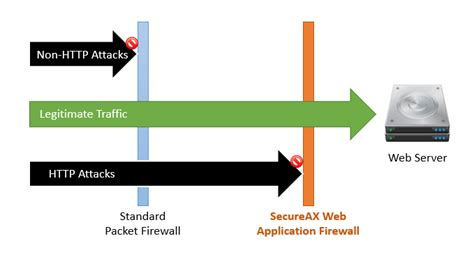
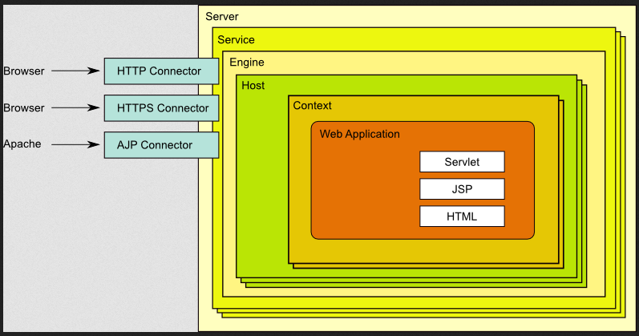

Bypassing WAF
WAF definition
Web application firewall (WAF) is a specific form of application firewall that filters, monitors, and blocks HTTP traffic to and from a web service. By inspecting HTTP traffic, it can prevent attacks exploiting a web application's known vulnerabilities, such as SQL injection, cross-site scripting (XSS), file inclusion, and improper system configuration.

Apache Tomcat
Apache Tomcat is an open-source implementation of the Java Servlet, JavaServer Pages, Java Expression Language and WebSocket technologies. Tomcat provides a "pure Java" HTTP web server environment in which Java code can run.
Apache HTTP Server vs Apache Tomcat
• The purpose of the Apache HTTP Server is to simply serve static files such as text, HTML, images, audio and video files to web-based clients.
• In contrast, the Apache Tomcat server delivers content that changes depending upon who the client is, whether the client has signed in and what the client has done on previous interactions with the server.
Apache Tomcat Architecture
